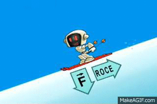
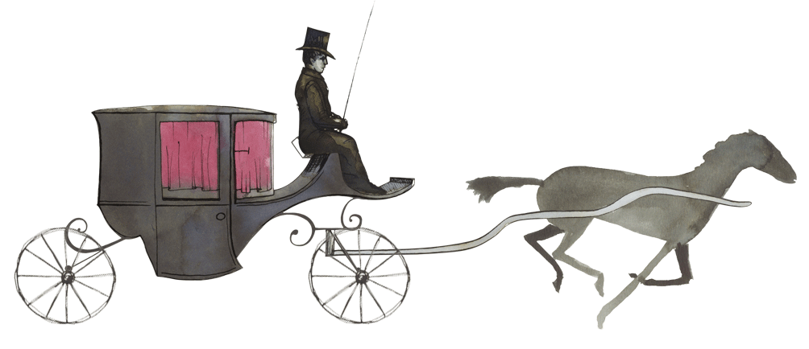

Proyecto N° 1: ¿Qué hace que se muevan los objetos?
I. Explorar:
1. ¿Cómo puedes hacer que un objeto se mueva?
La fricción es una fuerza que se opone al movimiento de un objeto cuando está en contacto con otro.
2. Realizar un dibujo sobre la fricción.
La tracción es una fuerza que se aplica a un objeto paraa moverlo o arrastrarlo en una dirección específica. La tracción se opone a la fricción.
3. Realizar un dibujo sobre la tracción.
La fuerza y el movimiento fueron ampliamente estudiadas por Isaac Newton en el siglo XVII.
4. Observar el video sobre Isaac Newton y escribe lo que más te gusta de este personaje.
Desafío:
Construir un robot de tracción para investigar los efectos de las fuerzas equilibradas y no equilibradas sobre el movimiento de un objeto.
II. Crear:
1. Completar la tabla de roles. Recordar las responsabilidades que debe cumplir cada integrante del equipo.
| Rol | Responsable |
|---|---|
| Comunicador | |
| Organizador | |
| Constructor | |
| Programador |
2. ¿Qué componentes del kit utilizaron?
3. ¿Qué ocurrió cuando...
...agregaron muchos elementos a la cesta?
...cambiaron a neumáticos más grandes?
...cambiaron de superficie?
III. Compartir:
1. ¿Explicar cómo funciona el modelo?
2. ¿Explicar en qué consisten las fuerzas equilibradas y no equilibrada?
3. Relacionar lo aprendido con un ejemplo cotidiano.
4. ¿Cómo calificarías el desempeño del equipo?